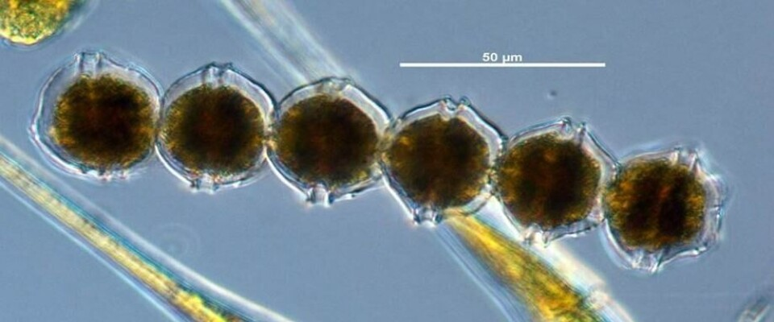
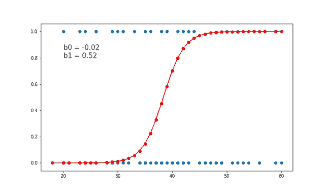
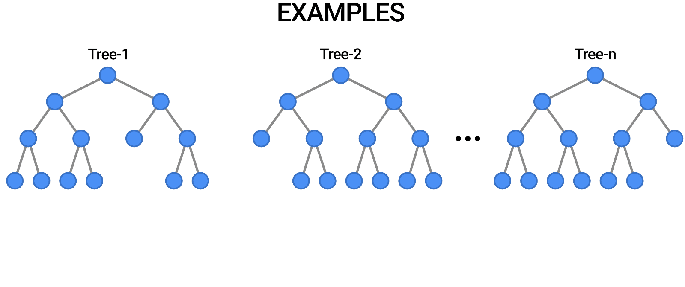
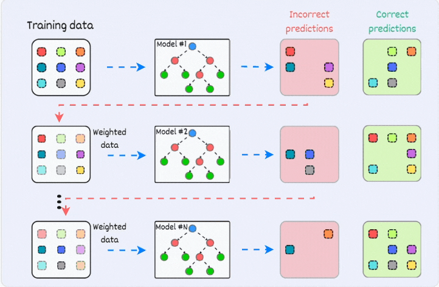

INGENIERÍA PESQUERA | PROYECTO INTEGRADOR II
UNIVERSIDAD TECNOLÓGICA NACIONAL | FACULTAD REGIONAL TIERRA DEL FUEGO - EXTENSIÓN ÁULICA USHUAIA
Este trabajo propone y valida un enfoque basado en inteligencia artificial para la detección temprana de eventos asociados a la toxina paralizante de moluscos (TPM). Mediante la construcción de un dataset integrado (2021-2025) y el entrenamiento de clasificadores jerárquicos en cascada, el sistema evalúa la peligrosidad de episodios de marea roja en Puerto Almanza, funcionando como una herramienta complementaria de apoyo a la toma de decisiones sanitarias.
Ushuaia, Tierra del Fuego | Junio de 2026
Las Floraciones Algales Nocivas (FAN), conocidas coloquialmente como "marea roja", son proliferaciones anómalas de microalgas fitoplanctónicas que producen metabolitos tóxicos. Estas toxinas se bioacumulan en organismos filtradores, principalmente bivalvos, transformándolos en vectores de intoxicación.
(Microgramos de equivalentes de Saxitoxina por kilogramo de tejido). Es el estándar internacional para medir la toxicidad. Si una muestra supera este umbral, el molusco es letal para el consumo humano y se declara el Cierre Sanitario (Veda).
El canal Beagle posee un historial de eventos de toxicidad extrema documentados en la literatura regional.
Se registró un evento extremo con mortalidad multiespecífica. La transferencia trófica de toxinas afectó no solo a bivalvos, sino también a peces, aves y mamíferos marinos.

Inercia Térmica
Retardos temporales entre clima y respuesta biótica.
Inercia Biológica
La toxina continúa en los moluscos luego de pasada la FAN.
Estado del Arte
Global: IA con biosensores in situ.
Regional: Clima satelital proxy.
Amenaza recurrente a la salud pública y parálisis económica de la pesca artesanal y la recolección en Puerto Almanza.
Esquema reactivo basado en bioensayos in vitro. El desfasaje (extracción, logística y análisis) retrasa resoluciones entre 48 y 72 horas.
Dependencia exclusiva del flujo físico de muestras. Falta de integración automatizada de variables climáticas para priorizar muestreos.
Cubre una brecha local crítica: la ausencia de un sistema automatizado en Puerto Almanza que mejore la anticipación de eventos sin reemplazar los procedimientos sanitarios de referencia.
La IA clásica es ideal para este problema porque permite modelar la complejidad biológica encontrando relaciones no lineales en el historial meteorológico.
Desarrollar y evaluar un sistema basado en inteligencia artificial para la detección temprana y clasificación de eventos de marea roja en el canal Beagle, integrando variables meteorológicas y series de TPM para validar su viabilidad como herramienta de apoyo a la toma de decisiones.
Construir un dataset limpio (2021-2025) calculando medias móviles para capturar la inercia climática local.
Diseñar, entrenar e implementar un esquema de clasificación jerárquico en dos etapas (Presencia y Peligro).
Evaluar la aplicabilidad operativa real e interpretar los drivers ambientales que gatillan la toxina.
Combinación de 275 muestras empíricas reales (Lab. de Toxinas) con 101 variables meteorológicas diarias satelitales (NASA POWER) en el período 2021-2025.
Cálculo de medias móviles (7, 14 y 30 días) y rezagos temporales para capturar matemáticamente la inercia del clima antes de cada muestreo.
Particionado cronológico estricto usando TimeSeriesSplit (n_splits=5). El modelo jamás vio el futuro ni entrenó con datos sintéticos imputados.
Para evitar sesgos de aprendizaje por redundancia climática, el entrenamiento y la evaluación final se restringieron estrictamente a los 275 días con análisis de laboratorio, descartando los días interpolados.
Se implementó un esquema de clasificación jerárquica en dos etapas para predecir la categoría final de aptitud sanitaria. La inferencia final del sistema se obtiene aplicando ambos clasificadores de forma secuencial.
Detección Binaria: En la primera etapa, el clasificador analiza las forzantes meteorológicas para detectar la Presencia de toxina, discriminando entre observaciones "No detectables" y "Detectables".

Clasificación de Grado: Solo si el modelo predice la presencia de toxina, se activa esta segunda etapa donde el modelo especialista evalúa si la muestra supera el umbral normativo (Apto [< 800 µg] vs. No apto [> 800 µg]).


| Algoritmo Evaluado | F1 Fase 1 | F1 Fase 2 |
|---|---|---|
| Gradient Boosting | 0.399 | 0.742 |
| SVM | 0.236 | 0.664 |
| XGBoost | 0.470 | 0.622 |
| Random Forest | 0.503 | 0.463 |
| Regresión Logística | 0.692 | 0.227 |
| Clase Predicha | Precision | Recall | F1-Score |
|---|---|---|---|
| 0: Normal | 0.87 | 0.68 | 0.76 |
| 1: Alerta (Apto) | 0.35 | 0.64 | 0.45 |
| 2: Cierre Sanitario | 0.60 | 0.50 | 0.55 |
Matriz multi-clase empírica. Modifique los errores para observar el impacto en las métricas.
En escenarios de desbalance extremo, esta muestra acotada induce alta sensibilidad paramétrica. Los valores cuantitativos representan una tendencia; una variación unitaria en la clase minoritaria impacta fuertemente en el F1-Macro.
El análisis SHAP demuestra que el modelo capturó los gatillos ecofisiológicos de A. catenella. Identificó que forzantes distintos controlan la presencia del alga frente a la proliferación tóxica masiva.
La amplitud térmica sostenida y el calentamiento mensual (MA 30d) son los precursores que permiten la aparición celular inicial en el canal.
El paso hacia la veda sanitaria (>800 µg) está dominado por la hidrodinámica: bajas velocidades de viento (MA 7d/30d) y alta radiación que inducen calma turbulenta.
Los errores del modelo surgen por la imposibilidad de capturar procesos físicos oceanográficos clave (como frentes de salinidad o advección de células) que anteceden a los brotes masivos.
Demostró viabilidad predictiva (anticipando el 50% de eventos críticos) exhibiendo un sesgo precautorio que protege invariablemente la salud pública.
Validación en sombra prospectiva sugerida para la próxima temporada. El algoritmo correrá en paralelo al laboratorio para fortalecer la muestra (N) y estabilizar la varianza.
Prioridad ineludible: fondeo de biosensores locales. Solo integrando salinidad y nutrientes el modelo podrá escalar hacia arquitecturas Deep Learning (LSTM/GRU).
El sistema asume como aceptable el costo económico de un falso positivo (cierre preventivo) frente al altísimo riesgo sanitario de omitir un evento de toxicidad extrema.
La IA no decide. Opera en dashboards orientativos requiriendo siempre validación analítica confirmatoria para emitir dictámenes normativos de cierre o apertura.
Al depender de un solo pixel satelital (Almanza), el modelo actual no puede sectorizar micro-zonas dentro del canal, limitando la granularidad espacial del control.
El sistema no es estático. Plantea un reentrenamiento continuo con la ingestión periódica de nuevas muestras de laboratorio para calibrar dinámicamente los umbrales.
Espacio para consultas
Y a todos los presentes por su tiempo y atención durante esta presentación.